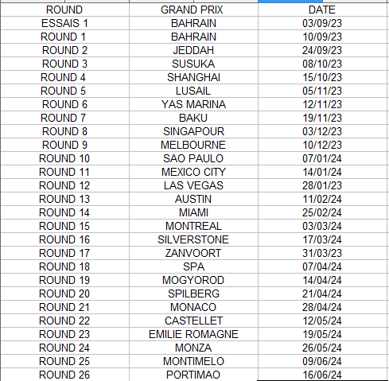

Réglement du serveur: A votre arrivé passer par la présentation pilotes, ensuite une fois cela fait vous serrez contacter par un DT (Directeur Ecurie) pour intégré son écurie. Vous devez choisir aussi une académie (Ferrari,Mercedes,Renault,Honda,Petronas,Ford) Ce salon est et doit rester dans la bonne humeur et la bonne entente aucun acte de racisme ne sera tolérer si jamais c'est le cas un ban définitif du serveur sera mis en place. Le sondage de présence sera a votre disposition du mercredi 18h au samedi 18h, une fois le délais dépasser le salon sera clôturer; votre vote ne pourra être modifié. Si vous êtes absent alors que vous avez mis présent une sanction budgetaire pour votre écurie sera mis en place. La météonprovisoire sera mise a votre disposition le mercredi et la définitive le samedi. En cas de problème avec un membre du serveur ou une absence pendant un laps de temps merci de prévenir les membres du staff
Réglement d'avant course: Les invitations seront envoyé à 20h15. Départ de la course à 20h30 peu importe si tout les pilotes sont présent ou non si un pilote rejoin en cours de qualification il lui sera interdit de prendre part à la qualif et sera pénaliser d'un départ fond de grille. Aucun pilotes ne peut mettre prêt avant le signale de la part d'un des membres du staff si cela se produit 3 point sera enlever de votre permis à points La qualif se deroulera en 30 minutes. Pendant le tour de formation ainsi que pendant la SC merci de respecter une distance d'une voiture et demi pour éviter toute collision.
Sous relance de SC le pilote de tête doit maintenir une vitesse de 100KM si la vitesse se trouve en dessous ou qu'il freine brusquement avant de faire la relance une pénalité de 10 secondes et un elephant rose sera rajouté a votre temps final de la course. Comme vous le savez le jeu a son propre drapeau rouge mais l'organisateur peu en mettre en place (exemple: beug de session ou autre) Les drapeaux noir et blanc ainsi que le drapeau noir sera mis en place, si votre comportement en piste est juger dangereux un drapeau noir et blanc vous sera attribuer si cela persiste vous aurez un drapeau noir et vous serez disqualifier de la course. Aucun acte de vengeance sur la piste ne sera tolérer si cela ce produit un ban du prochain grand prix Vous sera attribué et si il y à récidive un ban du serveur sera attribué. Pour les réclamations le salon sera ouvert le dimanche 23h et se clôturera le mardi à 23h: toute vidéo déposer après le mardi 23h ne sera pas traîter.
Vos vidéo devront être mis en ligne via votre chaine youtube ou twitch , si une vidéo filmer avec son téléphone est déposerr elle ne sera pas traiter. Un exemple de vidéo est a votre disposition dans le salon réclamation. Permis à points: Tous les pilotes auront 12 points sur son permis Si vous arrivé à 8 points: 10 minutes en moins sur la qualif. Si vous arrivé à 6 points: 20 minutes en moins sur la qualif. Si vous arrivé à 4 points: vous n'avez droit qu'à 1 tour de qualif. Si vous arrivé à 2 points: un ban qualif vous est imposer. Si vous arrivé à 0 points: ban qualif + ban course. Une fois votre permis à 0 vous récupéré 2 points après votre ban course et si vous faite une course sans aucune faute de votre part. Selon votre choix d'académie vous serrez reserviste pour la D1 (Exemple : vous êtes dans l'académie mercedes vous êtes réserviste chez mercedes mclaren et aston martin).
Mais pour pouvoir bénéficier de se poste de réserviste vous devez avoir au minimum 2 GP de suite sans aucune sanction ni aucune faute envers vous ainsi qu'une patate et bien sur avoir tout ses points sur votre permis. A la fin du championnat les 4 premiers du classement pilotes passeront en D1 sauf si dans ce top 4 il y a 1 pilote qui est déjà en D1 on prendra celui juste en dessous exemple le 4 ieme est un pilote D1 on prendra le 5 ieme. Bareme de points: 2 points pour la pôle lors des qualifs 1 points pour le meilleur tour (si dans le top 10) Points de la sprint: 1er : 8 points 2 ieme: 7 points 3 ieme: 6 points 4 ieme: 5 points 5 ieme: 4 points 6 ieme: 3 points 7 ieme: 2 points 8 ieme: 1 points
Points de la course principal: 1er: 22 points 2eme: 20 points 3eme: 18 points 4eme: 16 points 5eme: 14 points 6eme: 12 points 7eme: 10 points 8eme: 9 points 9eme: 8 points 10eme: 7 points 11eme: 6 points 12eme: 5 points 13eme: 4 points 14eme: 3 points 15eme: 2 points 16eme: 1 points 17eme: 0 points 18eme: 0 points 19eme: 0 points 20eme: 0 points 1 point en plus vous sera attribué si vous ramenez la voiture à la fin du GP
Petit rappel: comme c'est un championnat de F2 dragibus il y as la course sprint ainsi que la course principal. Le format de la cours sera en 50%, la sprint verra sa grille inversé le premier de la qualif partira dernier et ainsi de suite et pour la course principal se sera la grille de la qualif. 3 mots sont cachés dans le règlement veuillez contacterr un des membres du staff pour les lui donner.
Voici les sanctions qui seront appliquer lors du
championnat:
-casse : 5000 Euro casse sur un autre pilote : 5000 Euro +
Points au permis + seconde de pénalité
-abscence : 3000 Euro + 3 points sur le permis
-ligne stand coupe : 5000 Euro
-Vitesse excessive sous SC ou pitlane : 5000 Euro
-Non vidéo : 10000 Euro
-Respect des 3 min non fait : 3000 Euro
-Non respect du live : 15000 Euro + GP de suspension
Insultes que ce sois sur le paddock ou en priver : GP de
suspension
Les points au permis et les secondes seront attribuer selon
la gravité des fait
